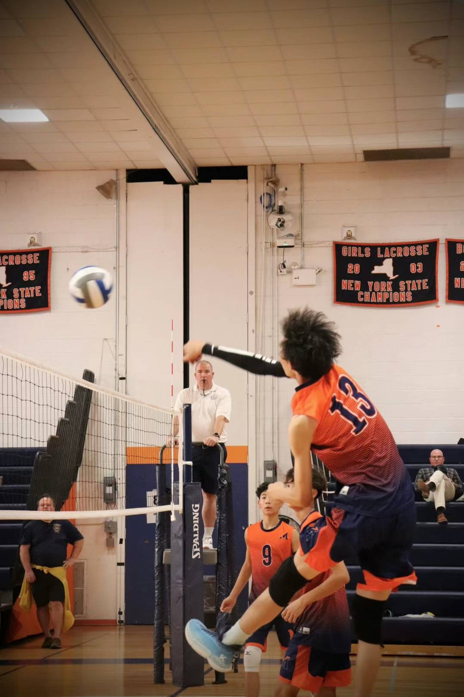
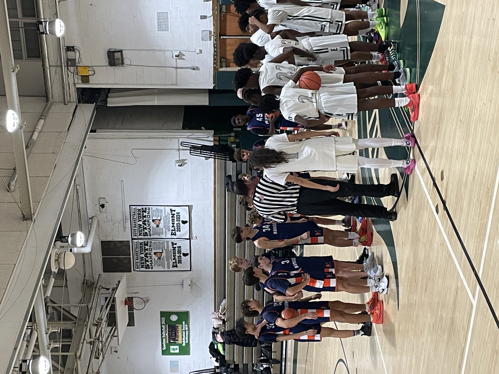
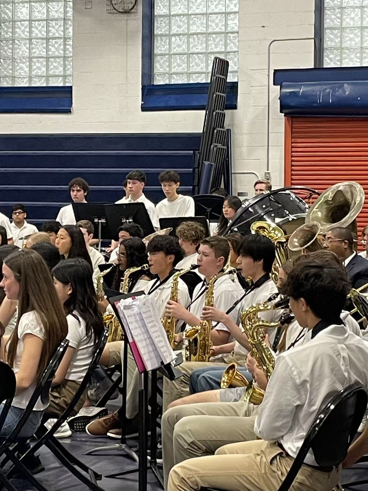
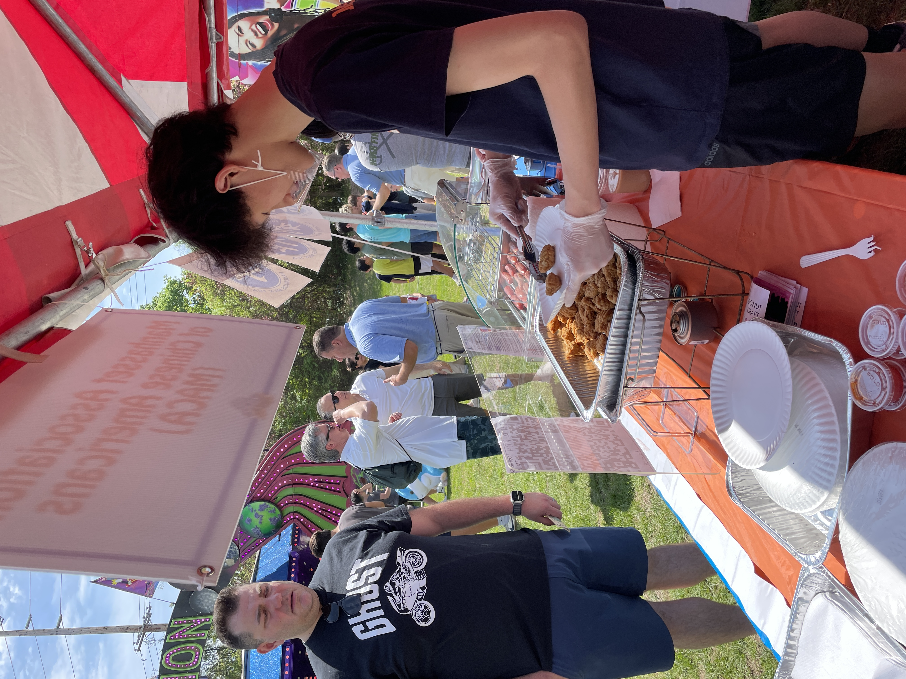
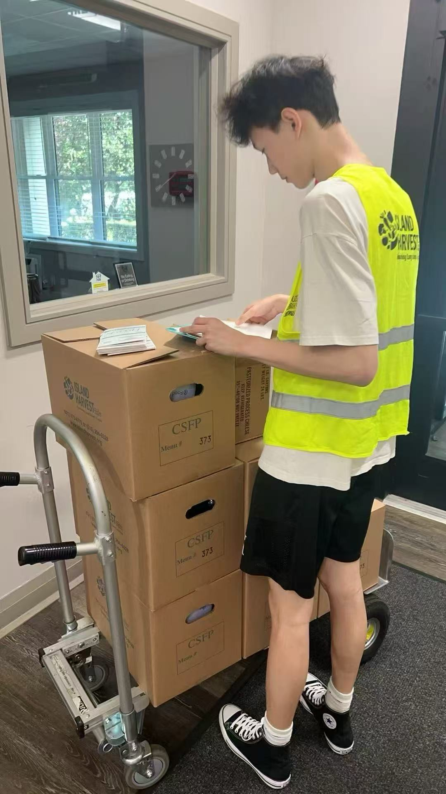

Activities & Leadership
🏀 Sports & Athletics
2023-2024
Basketball & Volleyball Champion
School Athletic Teams - MVP & Team Leadership



- Leadership Role: Team captain and MVP, led Grade 8 Class 12 to championship victory in school-wide basketball tournament
- Competitive Context: Multi-class school tournament with consistent practice schedule and strategic game planning
- Skills Developed: Team coordination, strategic thinking under pressure, resilience, and collaborative problem-solving - directly applicable to group projects and leadership roles
- Volleyball: Active participant in school volleyball competitions, contributing to team success through consistent training and match participation
🎵 Music & Performance
Ongoing
School Band & Music Performance
Jazz Drums & Music Theory Excellence

- Sustained Commitment: Multi-year involvement in school band with regular rehearsals and public performances
- Formal Recognition: Dual certification from NYSSMA (New York State) and China Conservatory of Music in jazz drums and music theory
- Performance Experience: Consistent live performance experience requiring discipline, timing precision, and ensemble coordination
- Transferable Skills: Pattern recognition, rhythm analysis, and collaborative performance - skills that enhance focus and systematic thinking
🤝 Community Service
2025
Volunteer Service & Community Engagement
Nassau County Mid-Autumn Festival & Community Events



- Official Recognition: County-level certified volunteer through Nassau County Office of Asian American Affairs
- Event Role: Provided logistical support and community engagement for Mid-Autumn Festival cultural event
- Impact: Contributed to large-scale community event serving diverse populations, demonstrating cultural awareness and commitment to public service
- Skills Applied: Event coordination, cross-cultural communication, and community outreach
👨💼 Leadership Development
2025
Police Youth Academy Program
Leadership Development & Civic Education
- Program Completion: Successfully completed structured law enforcement youth training program
- Focus Areas: Civic education, community responsibility, discipline, and ethical decision-making
- Skills Developed: Leadership under structured environments, understanding of public service principles, and collaborative teamwork
- Application: Training emphasized responsibility, integrity, and service-oriented mindset applicable to academic and professional settings
Various
Business Competition Leadership
MicroBiz Jr & FBLA Competitions
- Leadership Role: Team leader and sales manager in regional MicroBiz Jr and FBLA business competitions
- Achievements: 3rd place overall, Best Company award, and Best Sales Manager recognition
- Skills Demonstrated: Strategic planning, team coordination, financial management, and persuasive communication
- Business Acumen: Practical application of entrepreneurial concepts including market analysis, product development, and sales strategy